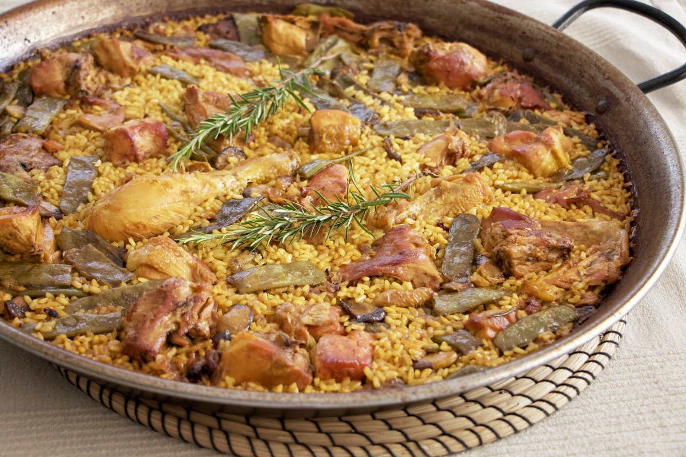
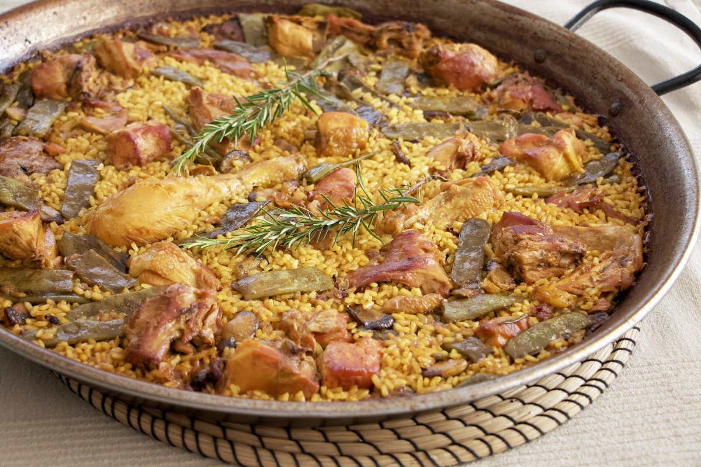

Arroces
En esta página encontraremos las recetas de diferentes arroces como por ejemplo el arroz al horno o la paella, un platotípico de la Comunidad Valenciana.
En esta página encontraremos las recetas de diferentes arroces como por ejemplo el arroz al horno o la paella, un platotípico de la Comunidad Valenciana.
Las tapas españolas son muy típicas aquí en España. Puedes encontrar mil diferentes como los huevos rotos, chipirones, pan con tomate... En esta página veremos la receta de la tortilla de patata y las croquetas.


Desoués de las comiodas lo mejor para acabar es un buen postre. Por eso aquí te dejamos dos postres que te dejarán con buen sabor de boca.